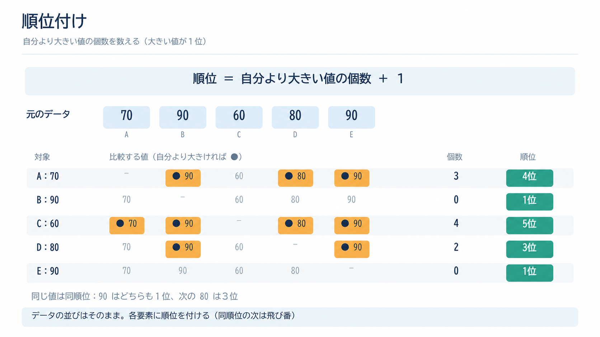
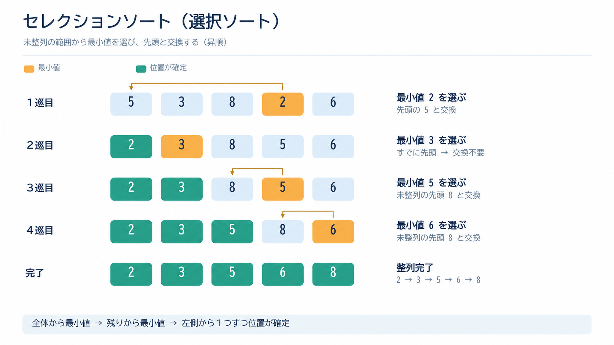
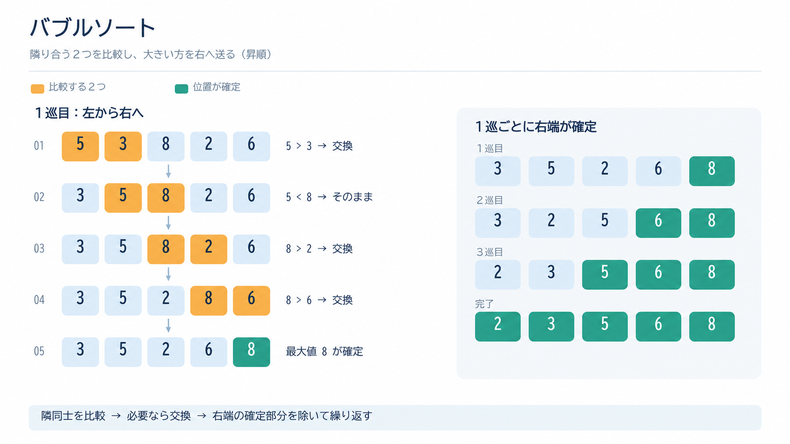
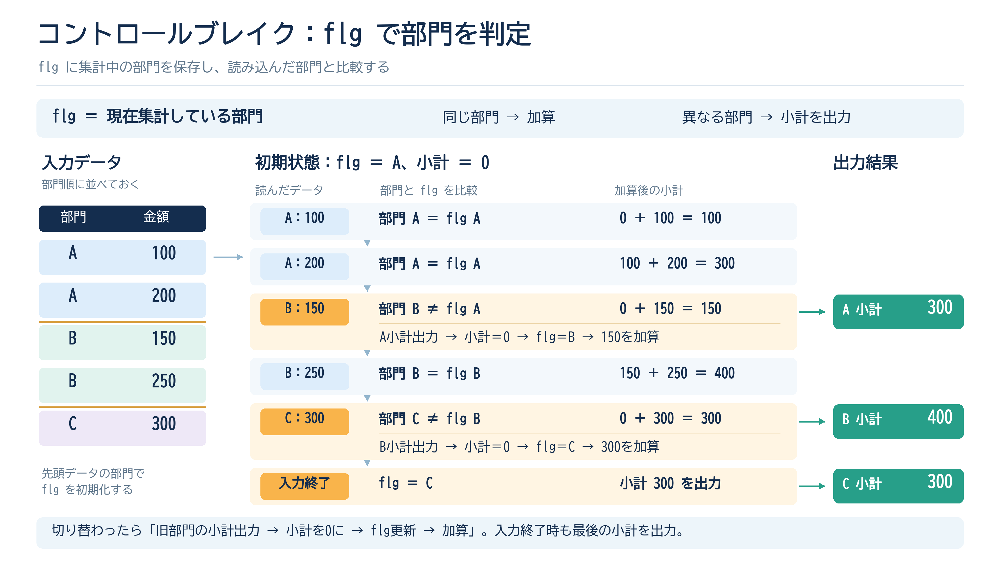
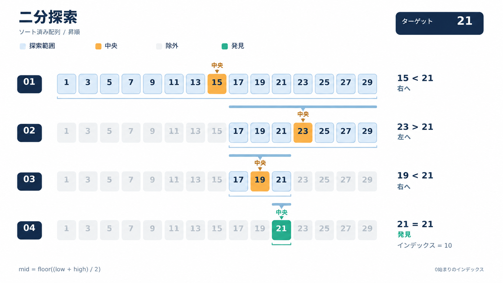
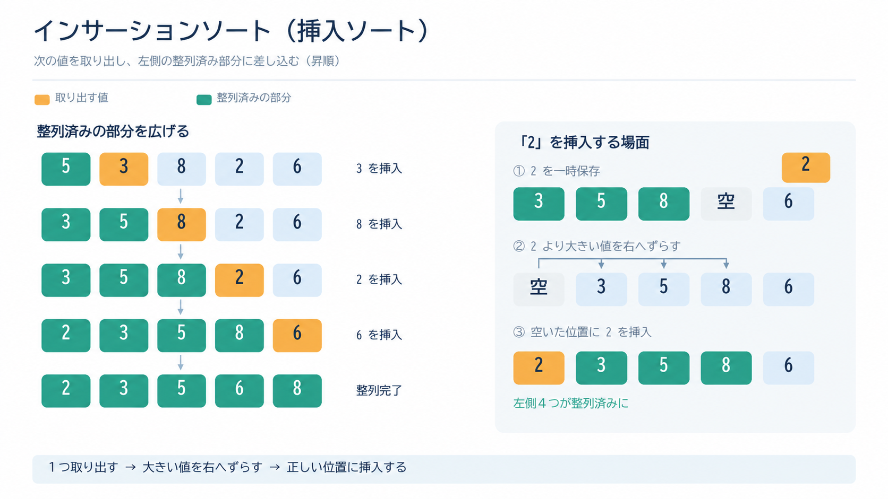

解答するときの注意
記号で答える問題のほか、【3】5は数値を答えます。【7】⑶⑷の複数解答問題は、問ごとにすべて正答して得点になります（⑶は順不同）。審査基準ではコンマの有無は問われません。
流れ図は本ページでは擬似コード（字下げでループの範囲を表現）に書き直して収録しています。実際の図はPDFで確認してください。
解説の凡例
すべての問題で、次の表示を共通して使用します。
各設問の問題文、プログラム、流れ図（擬似コード）、解答群を示します。
同じ分野の問題に共通して使える判断基準です。
設問ごとに、正答の根拠、処理の追跡、他の選択肢が不適切な理由を示します。
添字の範囲や比較の向きなど失点しやすい箇所です。
問題PDF末尾の審査基準に基づく最終的な解答です。
出典：公益財団法人 全国商業高等学校協会主催 令和7年度 第74回 情報処理検定試験 プログラミング 第1級（審査基準は問題PDF末尾に収録）
問題・審査基準PDF本記事は全商協会による公式解説ではありません。
設問一覧
正答一覧
| 番号 | 主な論点 | 正答 |
|---|---|---|
| 【1】 | 用語選択 | １ エ ２ シ ３ イ ４ サ ５ キ |
| 【2】 | 用語と説明文 | １ カ ２ イ ３ オ ４ ケ ５ エ |
| 【3】 | 用語・計算 | １ イ ２ ウ ３ ア ４ ウ ５ 9,000時間 |
| 【4】 | VBAプログラム | ⑴ ウ ⑵ ア ⑶ エ ⑷ ア ⑸ カ |
| 【5】 | 流れ図（乗客数一覧表） | ⑴ コ ⑵ オ ⑶ キ ⑷ イ ⑸ ク |
| 【6】 | 流れ図（販売状況一覧表） | ⑴ ケ ⑵ エ ⑶ カ ⑷ キ ⑸ ア |
| 【7】 | 流れ図（貸出分析一覧） | ⑴ オ ⑵ ソ ⑶ セ・ク（順不同） ⑷ ❶ス ❷イ ⑸ コ |
設問別解説
【1】用語選択（結合テスト・ルータ・DHCP・リスト・IPv6）
問題文
一般的な解法
用語問題の判断基準
- 各説明文がどの分野の話なのかを確認。
- その分野に関する用語を解答群から確認し、複数ある場合には違いに着目する。
- その違いに着目して説明文を再度読み、正解を導く。
解答群のうち、テストに係る用語は、システムテスト、リグレッションテスト、結合テスト、の３つ。
システムテストは、システム全体を対象とした全体におけるテスト。
リグレッションテストは、プログラムの一部を修正した後に、その修正が既存の機能に不具合を引き起こしていないかを確認するテスト。
結合テストは、単体テストが終わったのち、そのモジュールを複数組み合わせてデータの受け渡しが正しく行われているかを確認するテスト。
問題文では、「複数のプログラムを組み合わせ...テスト」とあるので、正答はエ．結合テスト。
解答群のうち、ネットワークに係る機器は、ゲートウェイ、ハブ、ルータ、の３つ。
ゲートウェイは、異なるプロトコル間の変換を行う機器。OSI参照モデルの第４～７層に位置する。
ハブは、複数のネットワーク機器をLANケーブルで接続する際に使用され，小規模なネットワークを構成することができる経路選択機能がない集線装置。
現在では「スイッチングハブ」のことを指して呼ばれることが多い。スイッチングハブはOSI参照モデルの第２層に位置する。
また、接続された機器からの信号をすべて受信・転送する「リピータハブ」もある。こちらはOSI参照モデルの第１層に位置する。
ルータは、経路選択機能があるネットワーク中継機器。OSI参照モデルの第３層に位置する。
問題文では、「OSI参照モデルの第3層でIPパケットの経路選択を行うネットワーク中継機器」とあるので、正答はシ．ルータ。
解答群のうち、プロトコルは、DHCP、TCP/IP、の２つ。
DHCP（Dynamic Host Configuration Protocol）は、自動（Dynamic）的にIPアドレスなどのホスト（host）情報を割り当て（Configuration）するプロトコル。
TCP/IP（Transmission Control Protocol/Internet Protocol）は、インターネットなどで利用される通信規約群の総称。
問題文では、「IPアドレス...などの設定情報を自動的に割り当てるプロトコル」とあるので、正答はイ．DHCP。
解答群のうち、データ構造の用語は、木構造、ルータ、の２つ。
木構造は、「ノード」が「エッジ」によって接続されて親子関係を持つ、階層的なデータ構造。
リストは、次の要素の格納場所を示す「ポインタ」を辿って目的のデータにアクセスできるデータ構造。
問題文では、「...ポインタをたどってデータを取り出すデータ構造」とあるので、正答はサ．リスト。
32ビットのアドレス長によるIPアドレス → IPv4を指す。アドレスの枯渇に対応するために導入された128ビットのアドレス長を持つ通信規約はIPv6。
【2】用語と説明文の対応（完全性・RAID・NAT・シフト演算・クロスサイトスクリプティング）
問題文
一般的な解法
対になる用語の区別
- ＜Ｂ群＞にある説明文すべてについて、何の用語の説明なのかを考える。
- 合致するものがあるか＜Ａ群＞から探し、解答する。
- RASISの完全性（Integrity）＝欠損や不整合がない、安全性（Security）＝不正アクセスの排除。
- RAID（複数ディスクを1台のように管理）とNAS（LAN接続の記憶装置）。NAT（アドレス変換）とVPN（仮想専用線）。
- シフト演算（ビット列の移動）と論理演算（真偽の演算）。クロスサイトスクリプティング（スクリプト実行）とソーシャルエンジニアリング（人の弱み）。
ア．
人間の弱みやミスなど、デジタル技術に依らないで不正を働く手口を「ソーシャルエンジニアリング」という。
ゴミ箱からパスワードのメモを盗むなどが例として挙げられる。
イ．
複数のHDDを１つのHDDのように管理する技術を「RAID」という。
ウ．
真偽を１，０を用いて演算することを「論理演算」という。
エ．
不正なスクリプトをユーザのブラウザ上で実行させるような攻撃を「クロスサイトスクリプティング（XSS）」という。
見えかけは正規のサイトに飛ぶような不正なリンクを埋め込み、クリックしたら裏側ではユーザのデータが送信されてしまうといった攻撃。
オ．
プライベートIPとグローバルIPとを相互に変換する技術を「NAT」という。
特に、同じネットワーク内の複数のプライベートIPを共通のグローバルIPに変換して通信できる技術をNAPT（IPマスカレード）という。
カ．
コンピュータシステムに関する評価指標（所謂RASIS）のうち、データ欠損がないことの指標は「完全性（Integrity）」という。
キ．
インターネット上に構築する仮想（Virtual）の専用（Private）回線（Network）は「VPN」という。
ク．
ネットワークに直接接続して利用する記憶装置を「NAS（Network Attached Storage）」という。
ケ．
ビット列を左右に移動（シフト）する演算を「シフト演算」という。
その方法によって「論理シフト」と「算術シフト」に区分される。
コ．
RASISのうち機密保持に関する指標は「安全性（Security）」という。
【3】用語選択と計算（2進化10進数・SMTP・MIPS・リエントラント・稼働率）
問題文
一般的な解法
数値変換と稼働率の計算
- 2進化10進数（BCD）＝10進数の各桁を4ビットの2進数で表す。23 → 2＝0010、3＝0011。
- 稼働率＝稼働時間÷総運用時間＝（総運用時間－修理時間合計）÷総運用時間。MTTR＝修理時間合計÷故障回数。
2進化10進数（BCD）は、10進数の各桁を4ビットの2進数で表す。
2 ＝ 0010、3 ＝ 0011 なので、並べると00100011 となる。
アは23を通常の2進数で表した 10111 に対応する表現なので違いに気を付ける。
FTP（File Transfer Protocol）はネットワーク上でファイルを通信する際に使われる通信規約。
POP（Post Office Protocol）は、主にメールの受信に使われる通信規約。
SMTP（Simple Mail Transfer Protocol）は、主にメールの送信で使用される通信規約。
MIPS（Million Instructions Per Second）は、１秒間に実行できる命令数を百万単位で表す性能指標を表す。
クロック周波数は、コンピュータが処理を実行する間隔の単位。１秒間の実行数をHz（ヘルツ）であらわされる。
スループットは、単位時間当たりに処理できる仕事量を表す。
プログラム呼び出しの４つの特性
１．リカーシブ（再帰可能）
プログラムを実行中にそのプログラム自身を再度呼び出しても正しく実行できる性質。
２．リロケータブル（再配置可能）
プログラムのどの位置に配置しても正しく実行できる性質。
３．リエントラント（再入可能）
様々なプログラムから同時に呼び出されてもそれぞれ正しく実行できる性質。
４．リユーザブル（再使用可能）
一度使ったプログラムを再度呼び出しても、最初に実行した際の値が残らないなど新しく正しく実行できる性質。
「MTTRは変わらない」ため、まず1回当たりの修理時間を求める。故障がもう1回発生した後の修理時間合計を使い、稼働率0.995となる総運用時間を求める。
５．稼働率の計算
現在：MTTR ＝ 30時間 ÷ 2回 ＝ 15時間／回
故障がもう1回発生 → 修理時間合計 ＝ 30 ＋ 15 ＝ 45時間
総運用時間を T として、 (T － 45) ÷ T ＝ 0.995 となる T を求めるので、
0.005T ＝ 45 → T ＝ 9,000時間
【4】問1．VBAプログラム（順位付け）
問題文
一般的な解法
順位付けの構造
- 順位付け：
まず、順位が保存される配列にすべて１を入れて初期化する。
その後、比較対象の要素同士を比較して、順位が下のものに対応する配列の要素を＋１していく。
比較した２つの要素両方について順位を加算していく方法と、片方にのみ順位を加算してもう片方は再度順位付けを実行するという方法がある。

Score(i) ＜ Score(k) のとき、i の方が値が小さいため i の順位を下げる。ElseIf にある Score(i) ＞
Score(k) と対になる条件になる。
イの「≦」では同じ値でも順位が下がってしまい、「数値が同じ場合は同順位」という処理条件に合わない。
Score(i) ＞ Score(k) のときは k の方が小さいので、k の順位を1つ下げるため Jun(k) に1を加える。
エでは i
の順位を下げることになり、比較結果と逆になる。
【4】問2．VBAプログラム（文字列の選択ソート）
問題文
一般的な解法
選択ソートの構造
- 選択交換法（セレクションソート）：配列のうち順番が未決定の部分の中から最大（最小）の要素を探し、未決定の範囲の一番後（前）の要素と交換していくのを繰り返すことで、並び替える手法。

未整列部分のすべてを比較する必要があるため、s は m+1 から n まで動かす。
イの「To n - 1」では最後の要素 Dat(n)
が比較対象から外れてしまう。
Dat(s) ＜ Dat(r) で、現在の最小値より小さい文字列※が見つかったら、その添字 s を新しい最小位置 r に記憶する。
ウは未整列範囲の一番先頭の添字が必ず入ることとなってしまうため、不適
オは添字を記憶する変数 r に文字列 Dat(s) を代入するため不適切。
※ 文字列については辞書順で手前に来るものを「小さい」、後ろに来るものを「大きい」と表現する。
「Alphabet」は「Kanji」よりも小さい。
最小値の位置 r が現在の位置 m と異なる場合だけ交換を行うため、条件は r <> m。
ウの「r =
m」は代入文であり条件式ではない。
【5】流れ図（鉄道路線の年間乗客数一覧表：線形探索・集計・交換法による降順並べ替え）
問題文
一般的な解法
交換法（バブルソート）の読み方
- 隣接交換法では、添字が前（後）の要素から隣同士を比較してそこで大小関係がどうなっているかをもとに、昇順（降順）に合致していなければ交換を行う。交換は３点交換。

内側のループで使われている j の範囲を決定する。
k+1 を参照しながら比較するため、外側ループの j は h－1 から始める必要がある。h から始めると k+1 が33となり配列の範囲を超える。
乗客数合計の降順に並べ替えるため、前の値 Jsyu(0, k) より後ろの値 Jsyu(0, k+1) が大きいときに交換する。
ウの「＞」では昇順になる。
配列 Jsyu は0行目から2行目までの3行構成なので、駅ごとのデータを交換するときは m を0から2まで動かす。
エの32は列方向の駅数であり、行方向の範囲ではない。
ここでは、次の処理で使用する変数 Hiritu を求める。
ループ７では制御変数 n を使って駅を順番に表示しているため、比率も n 番目の駅について求める。
i は探索処理で使用した変数であり、ここで表示対象の駅を表していない。
駅全体の合計は0列目に集計されているため、Jsyu(0,0)、Jsyu(1,0)、Jsyu(2,0)を表示する。
h列目は32番目の駅のデータであり全体合計ではない。
【6】流れ図（学生食堂の販売状況一覧表：学期別集計・上位5組の抽出）
問題文
一般的な解法
学期判定と上位抽出の読み方
- コントロールブレイク（グループトータル）：
１か月間、日ごとに集計をしたい場合に、データを読み込んで、日程が変わるごとに小計を出せるようなプログラム。データが対象値によってソートされている必要がある。 - 学期の区切り：販売日が学期の最終販売日以下（Hbi ≦ Saibi(g)）の間は同じ学期として集計する。≠ だと最終販売日当日以外の日付が全て「別学期」扱いになる。

販売日は昇順に記録されており、現在の販売日 Hbi がその学期の最終販売日 Saibi(g) 以下である間、その学期のデータとして集計する。
裏を返せば、その学期の最終販売日より進んでしまったタイミングで初めてループを出るような条件式を設定する必要がある。
「≠」では学期の最終日以外を正しく判定できず、毎回ループから出ることになってしまう。
資料３の２項めにあるように、学年別の販売数 Gkei(g, Gaku) を加算した後、４列目にその学期の合計販売数を加算する必要がある。
組の添字は1年1組を1、3年6組を18とする必要があるため、学年ごとの6組を考えて(Gaku－1)×6＋Kumiとする。
Gaku×6＋Kumi では1年1組が7になってしまう。
前回の最大値 i より小さい値の中から、今回の最大値を探している。したがって候補 Kkei(k, n) が現在の Maxより大きいときに更新する。
「＜」では最小値を探すことになる。
１つの上位値を見つけ終わったら、その値より小さい値の中から次の最大値を探すため、見つけた最大値 Max を次回の上限 i にする。
【7】流れ図（移動図書館の貸出分析：二分探索・挿入法による多条件並べ替え・分析方法別表示）
問題文
一般的な解法
二分探索と挿入法の読み方
- 二分探索とは、既にソートされている探索先のリストに対し、探索対象の値をそのリストの中央値と比較して大きいか小さいかを判定する。中央値より大きい側（小さい側）にあると判定されれば、リストのうち判定された側の中での中央値を出し、それに対してまた判定する。中央値と同値になるまでそれを繰り返してリスト内から値を見つけ出す方法。
- 挿入法：前（後）から順番に、すでに整列された部分と整列されていない先頭の要素とを比較し、その要素が入るべき場所に挿入されるよう、整列されている部分を１つずつ後（前）にずらしていく。


配列 Kkai は行方向が巡回場所番号、列方向がジャンル番号に対応する。したがって、巡回場所 Jban・ジャンル Soe の貸出回数に1を加える。
Tyu は図書コードを二分探索した際の図書の添字であり、ジャンル番号ではない。
挿入法では g 番目の要素を退避し、それより前の要素を後ろから比較して挿入位置を探す。したがって h は g－1 から1まで減らしていく。
貸出回数が同じ場合は出版日の降順で並べるため、まず Nkai(Wk(0)) ＝ Nkai(Wk(h)) を確認し、そのうえで退避した要素の出版日が比較相手より新しい Sbi(Wk(0)) ＞ Sbi(Wk(h)) 場合にずらす。
ク．Sbi(Wk(0)) ＞ Sbi(Wk(h))（順不同）
ジャンル別分析では、各巡回場所について名称と割合を表示する。ループ８の制御変数は m なので、巡回場所名は Jmei(m)、割合は直前に求めた Wari を連結する。
❷ イ．Wari
二分探索で、中央の図書コード Tcod(Tyu) が目的の Tcd より小さい場合は、目的値が上側にあるため下限 Ka を Tyu+1 に更新する。したがってYES側へ進む条件は Tcod(Tyu) ＜ Tcd。